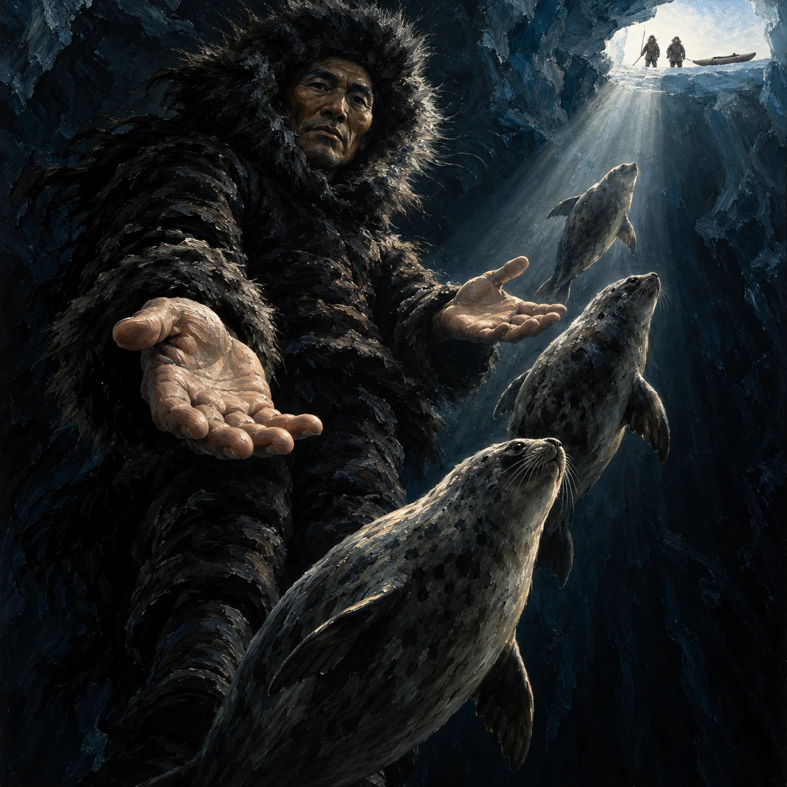

Nootaikok

Solemn hand-painted black-clad guardian effortlessly upright in deep blue-black iceberg water, close low perspective, releasing seals past open palms toward one tiny distant light shaft.
Aura: No aura. Sacred awe comes from impossible effortless underwater dwelling c03, offering seals c03/c04 and close low framing within iceberg domain c01/c02 under one natural light shaft.
Audit ciri dan sumber
- [object Object]
- [object Object]
- [object Object]
Native1254,200 and BOTH hand crops inspected: plainly hand-painted broad oil brushwork on solemn ageless face/fur/hands/ice, two ordinary eyes with steady grave gaze, closed mouth with NO smile/smirk. Black opaque Arctic fur/skin clothing c03, upright effortless submerged posture and weightless fur with no breath bubbles or swimming action; lower legs largely dark/occluded by seals, no extra limbs visible. Both offered palms counted exactly thumb plus four fingers. Three ordinary seals rise from dark depth past open hands toward high tiny opening c03/c04. Deep blue-black low-key interior c01/c02 with ONE daylight shaft on face/hands/seal edges; no cyan tourism panorama. Two tiny hunters entirely above water on solid ice ledge, harpoon and kayak on ice. Majestic guardian looms by low close foreshortening, no invented giant size/anatomy, ice/water magic, aura, text or injury. Seven Sangar checks pass. Full prior Claude reject archived, older01/02 intact.
Review sumberONE original square premium Mitoloka PAINTING of Nootaikok, the benevolent Inuit spirit dressed in black who dwells in water inside icebergs and offers seals to hunters. Paint a sacred guardian in profound darkness, NOT a photographic man swimming with wildlife. MEDIUM FIRST: a visibly HAND-PAINTED OIL illustration with thick expressive brushstrokes and layered pigment, especially on the FACE, hands, fur and ice. Stylized timeless painted face, simplified dignified planes, absolutely no photographic skin pores, stock-photo expression, tourism photograph, 3D render or glossy realistic portrait. The painting must have dramatic classical CHIAROSCURO. ANATOMY: ONE humanlike spirit, ONE head, TWO ordinary eyes, TWO arms, TWO legs; ageless solemn KINDLY BUT GRAVE face, closed mouth, level eyebrows, calm direct unwavering gaze at viewer, NO SMILE OR SMIRK. No invented anatomy, horns, fins, glowing eyes, skull or void hood. Fully opaque HEAVY MATTE BLACK ARCTIC SKIN/FUR PARKA with open black FUR-RUFFED HOOD around clearly present face, close fitted sleeves, black trousers and boots. Not a friar robe, cloak, fantasy costume or diving suit. Two ordinary open hands, EXACTLY FIVE digits each, four fingers plus opposed thumb, palms offered generously. Humanlike face and Arctic clothing are editorial interpretation of dressed friendly spirit. [nootaikok-c03] MOMENT: RELEASE a stream of THREE healthy ordinary seals upward PAST HIS TWO OPEN PALMS toward a distant high patch of light. The seals rise from BLACK DEPTHS behind and below his body, pass close around his offering hands, then swim upward toward hunters far above. The spirit itself hangs effortlessly UPRIGHT, VERTICAL AND UTTERLY STILL in deep water: feet not on any floor, no swimming kick or paddling, no breath bubbles. The fur ruff floats weightlessly around the face, loose fur ends drift in water. This impossible untroubled stillness inside deep ice reads as a SPIRIT AT HOME, not a person swimming. [nootaikok-c01,nootaikok-c03,nootaikok-c04] POWER: guiding and offering seals ONLY. Stationary intact ancient ice walls and natural dark water. No ice breaking, parting, cracks, moving ice, water magic, aura, eye effects or light emitted by spirit. [nootaikok-c01,nootaikok-c02,nootaikok-c03] SCALE & CAMERA: EXTREMELY LOW, TIGHT, FORESHORTENED camera inside deep water, looking up close at guardian. One large offered palm near foreground, face close and looming above camera, other open hand slightly nearer chest. Head and shoulders fill upper-left half; body recedes vertically down into dark depths. Normal humanlike body scale, no invented giant size; perspective produces majesty. Seals pass around and beyond hands without blocking the face or fingers. LIGHT: OVERWHELMING LOW-KEY DARKNESS. Almost everything is DEEP BLUE-BLACK and walnut-black. ONE narrow WHITE DAYLIGHT SHAFT enters a VERY SMALL DISTANT NATURAL OPENING high at upper-right, crosses dark water and strikes one side of solemn face and both offering hands. All other face planes remain in deep shadow, enough reflected same-shaft light to read both eyes. Seal edges catch this SAME light. NO bright cyan scene, evenly lit ice, blue sky, cloud puffs, sunny opening, beauty lighting, smile, bubbles or sparkling magic particles. SETTING: deep submerged interior of an iceberg/glacier ruled by Nootaikok, vast stationary ice walls only dimly suggested in surrounding blackness. At the tiny far opening, a narrow bright SOLID ICE LEDGE projects clearly above water. TWO minute secondary Inuit hunters stand with BOTH FEET ON THAT DRY ICE LEDGE, entirely out of water, in fur-ruffed skin parkas; one harpoon and one small skin-covered kayak rests on the same solid ice. Tiny silhouettes only, no faces or knitted caps. No full-width split above/below-water panorama; opening is a small distant aperture inside dark scene. [nootaikok-c01,nootaikok-c02,nootaikok-c03,nootaikok-c04] SURFACE: bold oil-painted tactile black hide, floating soft black fur, dignified hand-painted face, dark ice and natural seal fur, visible pigment and brush rhythm. MOOD: solemn protective spiritual MAJESTY, ancient guardian calmly releasing seals from profound depths, friendly but overwhelming, never casual, smiling, cute, sinister, Grim Reaper-like, decorative or tourism photo. HARD CONSTRAINTS: no text, letters, border, watermark, frame, invented sacred emblems, tattoos, extra heads/limbs/fingers, nudity, injury or gore; no aura, neon, glowing eyes, energy ribbon, ice powers, blue sky or cyan daylight wash; no borrowed film/game/anime design.